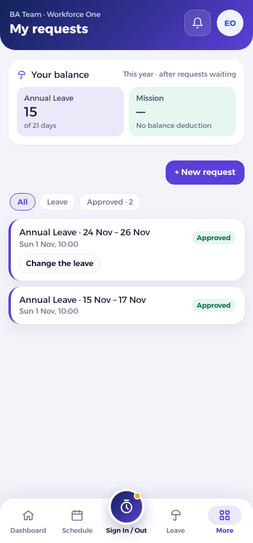
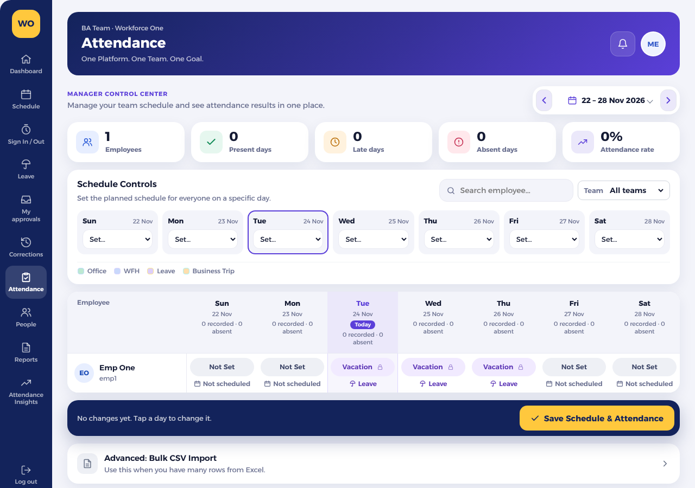
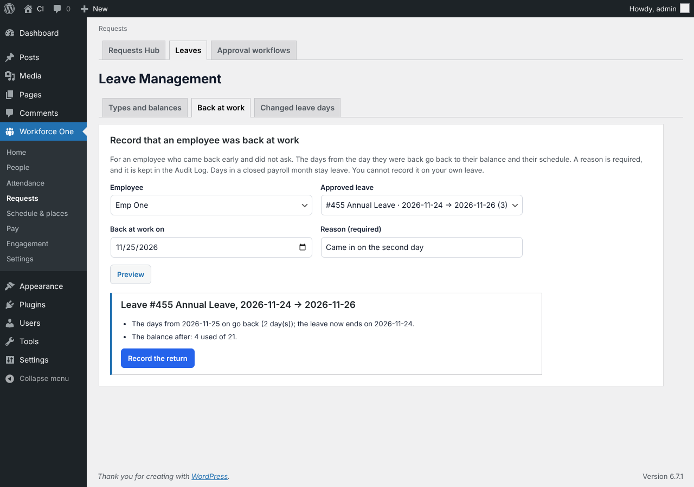
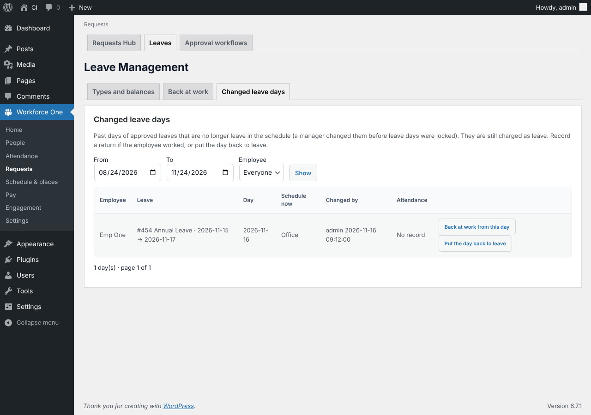

Leave return (3.31.161)
Screens of the release (docs/tasks/leave-return.md), taken from the plugin with the switch on. Off, none of them changes.

My requests: "Change the leave" on a leave that started today, the first day (all of it) included; again after an earlier change.

Attendance grid: approved leave days are locked (a lock on the chip, no picker), for every manager.

wp-admin → Leaves → Back at work: HR picks the leave, the day and a required reason, sees what goes back, then records it.

wp-admin → Leaves → Changed leave days: past leave days a manager changed, with two actions.